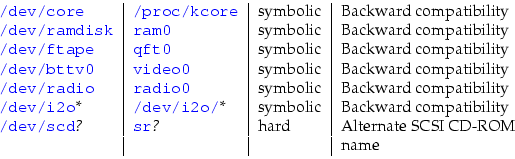
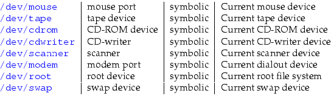
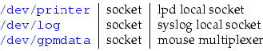

| Purchase | Copyright © 2002 Paul Sheer. Click here for copying permissions. | Home |
|
|
| |
UNIX was designed to allow transparent access to hardware devices across all CPU architectures. UNIX also supports the philosophy that all devices be accessible using the same set of command-line utilities.
UNIX has a beautifully consistent method of allowing programs to access hardware. Under UNIX, every piece of hardware is a file. To demonstrate this novelty, try viewing the file /dev/hda (you will have to be root to run this command):
|
less -f /dev/hda |
/dev/hda is not really a file at all. When you read from it, you are actually reading directly from the first physical hard disk of your machine. /dev/hda is known as a device file, and all of them are stored under the /dev directory.
Device files allow access to hardware. If you have a sound card installed and configured, you can try:
|
cat /dev/dsp > my_recording |
Say something into your microphone and then type:
|
cat my_recording > /dev/dsp |
The system will play out the sound through your speakers. (Note that this does not always work, since the recording volume or the recording speed may not be set correctly.)
If no programs are currently using your mouse, you can also try:
|
cat /dev/mouse |
If you now move the mouse, the mouse protocol commands will be written directly to your screen (it will look like garbage). This is an easy way to see if your mouse is working, and is especially useful for testing a serial port. Occasionally this test doesn't work because some command has previously configured the serial port in some odd way. In that case, also try:
|
cu -s 1200 -l /dev/mouse |
At a lower level, programs that access device files do so in two basic ways:
Because every kind of device that one can think of (except for network cards) can be twisted to fit these two modes of operation, UNIX's scheme has endured since its inception and is the universal method of accessing hardware.
Hardware devices can generally be categorized into random access devices like disk and tape drives, and serial devices like mouse devices, sound cards, and terminals.
Random access devices are usually accessed in large contiguous blocks of data that are stored persistently. They are read from in discrete units (for most disks, 1024 bytes at a time). These are known as block devices. Running an ls -l /dev/hda shows a b on the far left of the listing, which means that your hard disk is a block device:
|
brw-r----- 1 root disk 3, 64 Apr 27 1995 /dev/hdb |
Serial devices, on the other hand, are accessed one byte at a time. Data can be read or written only once. For example, after a byte has been read from your mouse, the same byte cannot be read by some other program. Serial devices are called character devices and are indicated by a c on the far left of the listing. Your /dev/dsp (Digital Signal Processor--that is, your sound card) device looks like:
|
crw-r--r-- 1 root sys 14, 3 Jul 18 1994 /dev/dsp |
Devices are divided into sets called major device numbers. For instance, all SCSI disks are major number 8. Further, each individual device has a minor device number like /dev/sda, which is minor device 0. Major and minor device numbers identify the device to the kernel. The file name of the device is arbitrary and is chosen for convenience and consistency. You can see the major and minor device number ( 8, 0) in the ls listing for /dev/sda:
|
brw-rw---- 1 root disk 8, 0 May 5 1998 /dev/sda |
A list of common devices and their descriptions follows. The major numbers are shown in parentheses. The complete reference for devices is the file /usr/src/linux/Documentation/devices.txt.
Partitions [With all operating systems, disk drives are divided into sections called partitions. A typical disk might have 2 to 10 partitions. Each partition acts as a whole disk on its own, giving the effect of having more than one disk. For instance, you might have Windows installed on one partition and LINUX installed on another. More details come in Chapter 19.]are named /dev/hda1, /dev/hda2, etc., indicating the first, second, etc., partition on physical drive a.
See Section 19.3.4 on how to format these devices.
The file /usr/src/linux/Documentation/devices.txt also has this to say (quoted verbatim):
Recommended links
It is recommended that these links exist on all systems:

Locally defined links
The following links may be established locally to conform to the configuration of the system. This is merely a tabulation of existing practice, and does not constitute a recommendation. However, if they exist, they should have the following uses:

/dev/modem should not be used for a modem which supports dial-in as well as dialout, as it tends to cause lock file problems. If it exists, /dev/modem should point to the appropriate primary TTY device (the use of the alternate callout devices is deprecated).
For SCSI devices, /dev/tape and /dev/cdrom should point to the ``cooked'' devices ( /dev/st* and /dev/sr*, respectively), whereas /dev/cdwriter and /dev/scanner should point to the appropriate generic SCSI devices ( /dev/sg*).
/dev/mouse may point to a primary serial TTY device, a hardware mouse device, or a socket for a mouse driver program (e.g. /dev/gpmdata).
Sockets and pipes
Non-transient sockets and named pipes may exist in /dev. Common entries are:

dd probably originally stood for disk dump. It is actually just like cat except it can read and write in discrete blocks. It essentially reads and writes between devices while converting the data in some way. It is generally used in one of these ways:
5 |
dd if=<in-file> of=<out-file> [bs=<block-size>] \ [count=<number-of-blocks>] [seek=<output-offset>] \ [skip=<input-offset>] dd if=<in-file> [bs=<block-size>] [count=<number-of-blocks>] \ [skip=<input-offset>] > <outfile> dd of=<out-file> [bs=<block-size>] [count=<number-of-blocks>] \ [seek=<output-offset>] < <infile> |
To use dd, you must specify an input file and an output file with the if= and of= options. If the of= option is omitted, then dd writes to stdout. If the if= option is omitted, then dd reads from stdin. [If you are confused, remember that dd thinks of in and out with respect to itself.]
Note that dd is an unforgiving and destructive command that should be used with caution.
To create a new RedHat boot floppy, find the boot.img file on ftp.redhat.com, and with a new floppy, run:
|
dd if=boot.img of=/dev/fd0 |
This command writes the raw disk image directly to the floppy disk. All distributions will have similar disk images for creating installation floppies (and sometimes rescue floppies).
If you have ever tried to repartition a LINUX disk back into a DOS/Windows disk, you will know that DOS/Windows FDISK has bugs in it that prevent it from recreating the partition table. A quick
|
dd if=/dev/zero of=/dev/hda bs=1024 count=10240 |
will write zeros to the first 10 megabytes of your first IDE drive. This will wipe out the partition table as well as any file system information and give you a ``brand new'' disk.
To zero a floppy disk is just as easy:
|
dd if=/dev/zero of=/dev/fd0 bs=1024 count=1440 |
Even writing zeros to a floppy may not be sufficient. Specialized equipment can probably still read magnetic media after it has been erased several times. If, however, you write random bits to the floppy, it becomes completely impossible to determine what was on it:
|
mknod /dev/urandom c 1 9for i in 1 2 3 4 ; do dd if=/dev/urandom of=/dev/fd0 bs=1024 count=1440done |
Here is a nice trick to find out something about a hard drive:
|
dd if=/dev/hda1 count=1 bs=512 | file - |
gives x86 boot sector.
To discover what a floppy disk is, try
|
dd if=/dev/fd0 count=1 bs=512 | file - |
which gives x86 boot sector, system )k?/bIHC, FAT (12 bit) for DOS floppies.
If you have two IDE drives that are of identical size, and provided that you are sure they contain no bad sectors and provided neither are mounted, you can run
|
dd if=/dev/hdc of=/dev/hdd |
to copy the entire disk and avoid having to install an operating system from scratch. It doesn't matter what is on the original (Windows, LINUX, or whatever) since each sector is identically duplicated; the new system will work perfectly.
(If they are not the same size, you will have to use tar or mirrordir to replicate the file system exactly.)
You can use tar to back up to any device. Consider periodic backups to an ordinary IDE drive instead of a tape. Here we back up to the secondary slave:
|
tar -cvzf /dev/hdd /bin /boot /dev /etc /home /lib /sbin /usr /var |
tar can also back up across multiple floppy disks:
|
tar -cvMf /dev/fd0 /home/simon |
tar traditionally backs up onto tape drives. The commands
|
mt -f /dev/st0 rewindtar -cvf /dev/st0 /home |
rewind scsi tape 0 and archive the /home directory onto it. You should not try to use compression with tape drives because they are error prone, and a single error could make the entire archive unrecoverable. The mt command stands for magnetic tape and controls generic SCSI tape devices. See also mt(1).
If you don't want to see any program output, just append > /dev/null to the command. For example, we aren't often interested in the output of make. [ make is discussed later.]Here we absorb everything save for error messages.
|
make > /dev/null |
Then, of course, we can absorb all output including error messages with either
|
make >& /dev/null |
or
|
make > /dev/null 2>&1 |
The device /dev/null finds innumerable uses in shell scripting to suppress the output of a command or to feed a command dummy (empty) input. /dev/null is a safe file from a security point of view. It is often used when a file is required for some feature in a configuration script, and you would like the particular feature disabled. For instance, specifying the users shell to /dev/null inside the password file will certainly prevent insecure use of a shell, and is an explicit way of saying that that account does not allow shell logins.
You can also use /dev/null to create a file containing nothing:
|
cat /dev/null > myfile |
or alternatively, to create a file containing only zeros. Try
|
dd if=/dev/zero bs=1024 count=<number-of-kilobytes> > myfile |
Although all devices are listed in the /dev directory, you can create a device anywhere in the file system by using the mknod command:
|
mknod [-m <mode>] <file-name> [b|c] <major-number> <minor-number> |
The letters b and c are for creating a block or character device, respectively.
To demonstrate, try
|
mknod -m 0600 ~/my-floppy b 2 0ls -al /dev/fd0 ~/my-floppy |
my-floppy can be used just like /dev/fd0
Note carefully the mode (i.e., the permissions) of /dev/fd0. /dev/fd0 should be readable and writable only to root and to users belonging to the floppy group, since we obviously don't want an arbitrary user to be able to log in (remotely) and overwrite a floppy disk.
In fact, this is the reason for having devices represented as files in the first place. UNIX files naturally support group access control, and therefore so do devices.
To create devices that are missing from your /dev directory (some esoteric devices will not be present by default), simply look up the device's major and minor number in /usr/src/linux/Documentation/devices.txt and use the mknod command. This procedure is, however, somewhat tedious, and the script /dev/MAKEDEV is usually available for convenience. You must be in the /dev directory before you run this script.
Typical usage of MAKEDEV is
|
cd /dev./MAKEDEV -v fd0./MAKEDEV -v fd1 |
to create a complete set of floppy disk devices.
The man page for MAKEDEV contains more details. In particular, it states:
Note that programs giving the error ``ENOENT: No such file or directory'' normally means that the device file is missing, whereas ``ENODEV: No such device'' normally means the kernel does not have the driver configured or loaded.